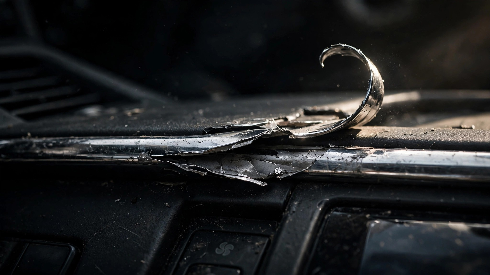

Ford Recalled 548,463 Expeditions Because the Center Console Turns Into a Blade

Let's talk about what happens in the first 150 milliseconds of a crash. The crumple zones fold. The seatbelt pretensioner fires. The airbag inflates. Every surface your body might contact is engineered to absorb energy, to yield, to not cut you open. Automakers spend billions making sure the interior of your vehicle doesn't become a weapon during impact. Ford just recalled 548,463 Expeditions because the center console became a weapon while parked.[1]
The defect is almost satirically mundane. Chrome plating on the center console of 2018 through 2024 Ford Expeditions bubbles, lifts from the substrate, and peels back, leaving edges sharp enough to lacerate skin. Reach for the climate dial. Cut your finger. Fumble for the gearshift. Slice your palm. Ford's own recall report describes "hand and finger lacerations" and acknowledges that "a small number of instances" required professional medical care.[1] The agency logged 65 injuries before Ford acted. One accident. Zero fires. Just a trim piece that slowly transforms into a razor.
Two suppliers manufactured the console chrome: Xin Point and Forvia. According to NHTSA's recall documentation, both companies produced the trim with "parameters that do not meet Ford specifications."[1] That language deserves a moment. Ford wrote a spec. Two separate suppliers failed to meet it. And Ford installed the result into every Expedition rolling off the Dearborn and Kansas City lines for seven consecutive model years without catching the deviation. This is a manufacturing quality control failure with a seven-year incubation period. Whatever incoming inspection process Ford uses for interior trim, it did not flag non-conforming chrome plating from 2017 through 2024.
Easy to dismiss as cosmetic. But this is not a vehicle with margin to spare on occupant risk. FARS data from 2014 through 2023 records 1,515 fatalities involving the Expedition, a death rate of 2.31 per 100 million vehicle miles traveled. Among full-size SUVs, only the GMC Yukon (2.55) and Chevrolet Tahoe (2.49) score worse.[2] The Expedition is a vehicle that already kills its occupants at more than double the national average of 1.10. Adding an interior surface that draws blood during normal operation is not a footnote; it is layering a latent hazard on top of an already elevated baseline.
Straightforward fix: dealers replace the console trim, free of charge. NHTSA's campaign number is 26S38. Ford's internal reference is also 26S38. If you own a 2018 through 2024 Expedition, check your VIN at nhtsa.gov/recalls. Run your fingers along the center console chrome before you check. If it catches, you already know the answer.
The Supplier Quality Problem Ford Keeps Not Solving
Ford blamed its suppliers. This is not new. June's 741,195-unit rollaway recall covered a transmission park system where "insufficient fluid flow to the park valve" damages the parking pawl. July's 565,691 Bronco fire recall traced to engine bay wiring with inadequate insulation routing. This 548,463 Expedition chrome recall traces to off-spec plating chemistry.[3][4] In each case, the root cause is a component that shipped from a supplier and passed through Ford's quality gates without triggering a rejection. Three recalls in two months. Nearly two million vehicles. Three different supplier failures that Ford's incoming inspection missed.
Ford's VP of communications Mike Levine told reporters that the company's newest 2026 and 2027 models account for only 3.3 percent of this year's recall volume.[4] He is almost certainly right. That is also the problem. That other 96.7 percent represents vehicles Ford already sold, vehicles already in garages, vehicles whose owners are currently reaching for center console controls with unprotected hands. JD Power's Initial Quality Study measures Bluetooth pairing in the first 90 days. Chrome delamination happens on year three.
What This Means If You're Shopping
If you are cross-shopping full-size SUVs: the Dodge Durango carries a FARS death rate of 0.54 per 100 million VMT. Nissan's Armada scores 0.55. Cadillac's Escalade, which costs $20,000 more, scores 0.64. Expedition scores 2.31. That is a 4.3-fold gap between the Expedition and the segment's safest options. You can check your specific VIN for open recalls at nhtsa.gov/recalls. You should also check it for chrome that peels when you drag a fingernail across it.
Sources & References
- NHTSA Recall Campaign 26S38; USA Today, “Ford recalls over 540K vehicles. See affected models,” June 11, 2026. usatoday.com
- NHTSA, Fatality Analysis Reporting System (FARS), 2014–2023. nhtsa.gov
- Reuters, “Ford to recall over 741,000 US vehicles due to park system issue, NHTSA says,” June 30, 2026. reuters.com
- USA Today, “Ford touts quality, but recalls nearly 1 million vehicles in a week,” July 27, 2026. usatoday.com